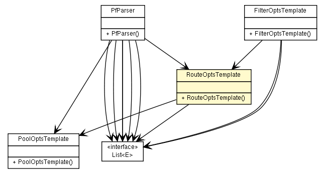

fr.univrennes1.cri.jtacl.equipments.openbsd
Class RouteOptsTemplate

java.lang.Object
 fr.univrennes1.cri.jtacl.equipments.openbsd.RouteOptsTemplate
fr.univrennes1.cri.jtacl.equipments.openbsd.RouteOptsTemplate
public class RouteOptsTemplate
- extends java.lang.Object
Template to build route options. This class is used at parsing time
as an intermediate storage.
- Author:
- Patrick Lamaiziere
| Methods inherited from class java.lang.Object |
clone, equals, finalize, getClass, hashCode, notify, notifyAll, toString, wait, wait, wait |
RouteOptsTemplate
public RouteOptsTemplate()
getHosts
public java.util.List<Xhost> getHosts()
getPoolOpts
public PoolOptsTemplate getPoolOpts()
setPoolOpts
public void setPoolOpts(PoolOptsTemplate poolOpts)
getRt
public int getRt()
setRt
public void setRt(int rt)
Copyright © 2010. All Rights Reserved.